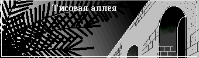

Тисовая аллея
Заросли расступились и я оказался на открытом месте, ощутив
ногами асфальт. Это была настоящая дорога, а в сотне шагов от меня светился
огонек. Я потащился на свет и вскоре оказался перед одноэтажным
домиком. "Зона моста. Прохода нет." - гласил дорожный знак на обочине. Перед
дверью в свете сильного фонаря сидел бородатый мужик в изодранной форменной
куртке и держал в руках колесо от мотоцикла.
- Ты кто? - спросил мужик, когда я приблизился.
- Помогите пожалуйста, - сказал я, сам удивившись жалкому звучанию
своего голоса.
- Вали отсюда. Здесь нельзя ходить. Запретная зона. Помогите...
- Вы не поняли.
- Говорю, проваливай, а то сейчас ружье принесу. Бомжей мне не хватало.
- Я не бомж, я музыкант - я протянул ему скрипку, - вот.
- Украл что ли? Проваливай, кому говорят.
Внезапно cвет фонаря стал меркнуть, к горлу подступила тошнота...
Пришел в себя я от того, что что-то холодное коснулось моей груди.
Я лежал на полу в незнакомой комнате. Рубашка была расстегнута. Бородатый
мужик стоял на коленях и слушал меня с помощью стетоскопа.
- Очнулся, да? - спросил он, когда я открыл глаза, - что ж ты вырубаешься
так резко? Давай-ка перевернись, я со спины послушаю... Юля!
- Чего? - в дверном проеме появилась чья-то растрепанная фигура.
- Тащи сюда шприц, димедрол и анальгин.
- Хорошо, папа.
- Ну, маэстро, - пробормотал мужик и достал прибор для измерения
давления, - давай-ка руку, померяемся.
Он долго измерял мне давление, хмурясь и чертыхаясь.
- Юля!
- Да?
- Оставь все. Неси срочно кардиомин и кофеин.
- А в каком ящике?
- Японский бог! - мужик поднялся и выскочил из комнаты.
- Сейчас дуба врежет - донесся до меня голос из за двери, - давления нет
совсем. Вот елки, такой молодой.
- А что у него?
- Похоже на сотрясение, вон как отделали. И потеря сил. Сердце не
тянет. Ну что готово? Давай шприц и позвони в "Скорую".
Человек вернулся, держа в руках шприц и кожаный ремешок.
- Кулаком работай, - скомандовал он, стянув ремнем мою руку выше
локтя, - терпи. А ты кто такой вообще?
- Я - Дима.
- А сколько тебе лет?
- Девятнадцать.
Свет опять стал меркнуть.
- Папа, "Скорая" не приедет, сказали что нет бензина, - раздалось из
соседней комнаты.
Это было последнее, что я услышал.
* * *
Я очнулся в кровати. Было позднее утро. Из открытого окна веяло запахом
дубовой листвы и нагретых солнцем кипарисовых веток. Здесь, в комнате, этот
аромат смешивался с тем воздухом, который бывает только в очень старых
домах, где сочетаются замшелый камень и столетнего возраста деревянные
перекрытия. Стены и потолок казались бугристыми под многочисленными слоями
побелки.
Моя одежда, постиранная и отутюженная, лежала на табуретке у изголовья
кровати, а на другой табуретке, ближе к окну сидела девушка лет семнадцати
с книжкой в руках.
- Ой, проснулся - улыбнулась она, заметив что я открыл глаза.
- А где этот? - спросил я продолжая недоверчиво осматриваться.
- Кто?
- Врач.
- Мой папа - смотритель моста, - ответила девушка и выдержала внушительную
паузу - сейчас позову.
Слова ее прозвучали столь гордо, что не будь я в нынешнем жалком состоянии,
я бы, конечно, рассмеялся. Звать никого не пришлось. Услышав наши голоса,
на пороге комнаты возник хозяин, тот самый бородатый мужик, которого я
принял за доктора.
- Как дела, Дмитрий батькович? - деловито поинтересовался он, садясь
на край кровати, - давай-ка пульс поглядим... ну... вроде пронесло. Так!
Кормить его, срочно.
Юля выскользнула из комнаты и вскоре до меня донеслось звяканье посуды.
- Ты как, вообще, себя чувствуешь? - продолжал мой благодетель.
- Да, вроде... - пробормотал я, пытаясь подняться.
Попытка не удалась. Я был едва а состоянии пошевелить рукой.
- Лежи-лежи, рано еще. Поешь сперва, поспи, а там поглядим. Повезло
тебе, парень. Еще бы немного и кирдык.
- Вы врач?
- Я - смотритель моста. Валерий Павлович Марков.
И опять в этой фразе мне послышалось нечто очень значительное.
- А вот и супчик больному, - в комнату вошла Юля, держа полотенцем
большую миску восхитительно пахнущего куриного супа.
Упрашивать себя я не заставил, и волком набросился на еду, которую поставили
на стул рядом. В одну минуту я покончил с супом и блаженно
повалился на подушку, ощущая, как жизнь с каждой секундой возвращается
в мой истерзанный организм.
- Ну, давай, рассказывай, - Валерий Павлович вывел меня из состояния
астрала, - кто такой, откуда, что стряслось?
И я рассказал ему все. Собственно, оригинальностью моя история не
отличалась. Дурак и есть дурак, как многие до меня. Я приехал к морю
с надеждой заработать. Немало рассказывали, что играя уличным
музыкантом в курортной зоне можно сделать неплохие деньги. И действительно
толпы полупьяных отдыхающих на набережной не скупились. Только в первую
ночь я заработал свой обычный месячный оклад, а заодно вынудил ретироваться
двух местных гитаристов, которые из за меня в ту ночь ни гроша не заработали.
Однако на следующий вечер, лишь только я начал играть, ко мне подошли
трое огромных амбалов, из за спин которых выглядывали вчерашние
гитаристы. Главный из этой банды, которого друзья называли Костылем,
сказал, что он меня убъет, если еще раз увидит со скрипкой.
Для убедительности он сбил меня с ног и спросил, хорошо ли я понял, что
от меня требуется. Следующий день я провел в раздумьях, а потом сообразил,
что ничего страшного не случится, если я перемещусь в соседний поселок,
на несколько километров по берегу.
Протопав пешком около трех часов я остановился в сквере у какого-то
дома отдыха. Смеркалось. Я занял место у фонтана и только-только хотел
вытащить скрипку как вдруг... Из подъехавшей легковушки возник Костыль со
своими бандитами. Дальнейшее - ясно. Меня отволокли в ближайшие заросли
и начали втроем пинать ногами. По-моему я терял сознание несколько раз.
Помню, что каким-то чудом мне удалось схватить скрипку - она у меня
очень дорогая, старинная, и броситься в кусты. За мной гнались,
но безуспешно. Дальнейшее я плохо запомнил. Наверное и правда у меня
было сотрясение. Может просто шок. Всю ночь я убегал неизвестно от кого,
залегал, прятался как ненормальный. И в итоге совершенно заблудился среди
скалистого леса. Ноги несли меня прочь от поселка все дальше в горы. А
потом я вышел на дорогу и увидел огни. Вот и вся моя история.
- Костыль, говоришь? - Валерий Палыч задумчиво потеребил бороду, - это
плохо. Он не просто бандит, он маньяк. И поймал он тебя не случайно,
а выслеживал целый день. Я это точно говорю. А раз пообещал убить, то уж
конечно... э...
- Что?
- Что-что... Нехорошо это. Ну, здесь тебе ничего не грозит. А искать тебя
он будет, это как пить дать. Обратно тебе нельзя. Так, а документы у тебя
есть?
- Все в сумке осталось там у фонтана - и документы, и деньги, и вещи.
- Ну, ладно, разберемся. Голова болит сейчас?
- Нет.
- Вот и славно, отдыхай пока. - сказал Валерий Палыч и поднялся.
Глаза мои сами собой закрылись и я моментально погрузился в дремоту. Теперь
это была не "отключка", а нормальный здоровый сон после еды.
* * *
Я болел еще несколько дней, и все это время незнакомые странные люди
заботились обо мне. Знал я о них совсем немного. Хозяин, смотритель
некоего моста, крепкий загорелый человек лет сорока, невысокий, но
коренастый. Мощный на вид, он, тем не менее, обладал странной утонченностью
движений, которая присуща обычно художникам или танцорам.
Его дочь походила на отца природной смуглостью кожи. Пронзительный
взгляд темных глаз, острый носик и всегда растрепанная шевелюра
непослушных черных волос делали ее какой-то озорной и электрической,
как разряд молнии. И вообще, она относилась к той разновидности людей, на
которых подсознательно останавливается взгляд. Эти люди в любой одежде и в
любых условиях кажутся яркими маячками. На таких можно смотреть бесконечно,
подобно тому как мы можем, не отрываясь, подолгу глядеть в пламя ночного
костра.
Проведя долгие дни в вынужденом безделии я часто задавался вопросом,
что заставляет их помогать мне? В искренности их я не сомневался, и был
совершенно уверен, что никакого подвоха нет в этой заботе. Интересно, а
как бы поступил я, если бы к моему порогу приполз вот такой же доходяга?
Моим другим занятием было разглядывание молодой хозяйки, в обязанности
которой входило наблюдение за мной. С ее стороны все делалось с подчеркнутой
серьезностью и давало основания думать, что куклы совсем недавно перестали
ее интересовать.
Итак, спустя несколько дней мне разрешили встать. Чувствовал я себя
на удивление хорошо. Постельный режим, обильное кормление и местный лесной
воздух, - не так уж и много оказалось нужно, чтобы окончательно поставить
меня на ноги. Был ранний вечер, когда я впервые вышел за порог. Вокруг
темнел лес, состоящий преимущественно из хвойных деревьев - сосен,
можжевельника. Прямо во дворе дома поднимался в небо огромный кипарис.
Тут же рядом проходила дорога, по которой я сюда и попал.
Асфальт был посыпан прошлогодними листьями и сосновой хвоей, из чего можно
было сделать вывод, что дорогой этой редко пользовались. Со всех сторон
над лесом поднимались острые, похожие на акульи зубы скалы, покрытые
зелеными пятнами скудной растительности. В лучах вечернего солнца эти
скалы были чуть розовыми. Такие пейзажи не редкость на картинах
средневековых художников, но я просто остолбенел от красоты, увидев все это
своими глазами.
- Привет, больной - поприветствовала меня Юля, закрывая дверь курятника, -
ты уже здоровый?
Перо, случайно запутавшееся в волосах, придавало ей вид индейского
воина, а драные джинсы усиливали это впечатление.
- Думается, что да, - откликнулся я, - красиво тут у вас.
- А ты правда музыкант? Сыграешь? - она подошла вплотную и глядела
с любопытством.
Я опустил глаза, ловя себя на мысли, что не могу выдержать ее взгляда.
- Что прямо сейчас? - пробормотал я смутившись.
- Как хочешь, можно потом. Тут, вообще, не очень красиво. Вот на
мосту - другое дело!
- Кстати, - оживился я, обрадовавшись, что нашел тему для разговора, - а
что это у вас за мост здесь?
- Пойдем, - с готовностью отозвалась Юля и зашагала к дороге, жестом
приглашая идти с ней.
Сразу у дома шоссе делало крутой поворот с сильным
подъемом. Через две минуты ходьбы лес вокруг кончился и я увидел бездну.
Мы стояли на краю глубокого ущелья, заполненного клочьями тумана.
Слева ущелье сжималось и уходило куда-то выше в горы. Справа - наоборот
расширялось и становилось все глубже, а дальше синела морская бухточка,
к краю которой прилепился один из курортных поселков, которых полно
на побережье. Похоже это было то самое место, где я пытался устроить
свой последний концерт.
Ну, а дорога, по которой мы пришли, превращалась в мост
на другую сторону. Это было громадное, и очень старое сооружение.
Опоры, сложенные из крупных неровных блоков поросли как травой кривыми
соснами, каким-то чудом висящими над пропастью. Ограждение моста, сделанное
под мрамор, кое где обвалилось. При въезде, по обе стороны дороги возвышались
массивные тумбы. На одной из них стояла гранитная ваза в античном стиле.
На другой тумбе вазы не было. Судя по всему, осколки ее давно покоились
на дне ущелья.
- Здесь мне больше всего нравится, - сказала моя спутница тихим голосом, -
красиво. Дорога в никуда.
- Так уж прямо и в "никуда".
- Ну, раньше она в Бахчисарай вела, а теперь уже ни куда не ведет.
- Почему?
- Когда у нас наступила украинская незалэжность,
не стало денег на ремонт. Потом, выше в горах, дорога обвалилась,
и все. Никому она стала не нужна. Отец говорит, если нас отпустят обратно
в Россию, то дорогу починят. Теперь ей редко пользуются. Туристы иногда
проезжают. Там выше виды красивые, хотя этот, наверное, самый лучший.
Так что мы - смотрители, вот приходим сюда и смотрим, смотрим, смотрим...
Я рассмеялся.
- Ну, это я шучу, - продолжала Юля, - отец и вправду тут работает, следит
за мостом. А я гляжу на пейзажи. Зато я - смотритель тисовой аллеи, о!
Это тут, совсем рядом.
- Покажешь? - я поднял глаза и заставил себя выдержать ее взгляд.
Зря я это сделал. Внутри что-то качнулось и полетело вниз, будто падая
кувырком в ту пропасть у моих ног.
Юля замерла на секунду с открытым ртом и чуть попятилась.
- Завтра, Дима, - ответила она дрогнувшим голосом, потом отошла на мост,
и оперлась на ограждение.
Некоторое время она смотрела вниз, сжав ладонями виски, затем тряхнула
шевелюрой. Перо слетело с ее волос и медленно поплыло над ущельем,
исчезая в наступающих сумерках. Далеко у моря зажглись первые огоньки.
- Завтра, - повторила она, обернувшись, и поглядела с грустной улыбкой.
* * *
Когда мы вернулись, почти уже стемнело. Валерий Палыч сидел на крыльце
и курил что-то без фильтра.
- О, я вижу, наш юный друг более чем здоров, - сказал он, когда мы
приблизились.
Он внимательно посмотрел сперва на меня, потом, еще внимательней, на дочь.
Та проворно скользнула мимо и исчезла за дверями.
- Садись, Дима, поговорим, - продолжал он, - куришь?
- Нет.
- Это правильно. Ну так что, пора на выписку, а? Ты, наверное, домой хочешь.
Я пожал плечами.
- Значит, давай так. Завтра утром я отвезу тебя в город и посажу на
автобус. Бензина у меня немного, но все равно надо быть в управлении.
"Завтра" - думал я, с трудом пытаясь собрать разбегающиеся мысли. Завтра.
Ну конечно! Не век же мне сидеть на шее. Да я и сам должен был догадаться,
сам сказать.
- Значит договорились, - произнес Валерий Палыч. Он потушил сигарету и
поднялся, - что с тобой такое? Тебе что, опять плохо?
Я не слышал его. Перед глазами летело белое перышко.
- Дима!
- Все нормально. Завтра. Мост у вас хороший. Большой.
- Что? мост? Мост - это да. Памятник архитектуры, построен еще
при Александре Третьем... Постой-ка! - он хлопнул себя по лбу и сел снова, -
Слушай, можно тебя попросить? Мне помощь нужна, просто рабочая сила. Я один
не справлюсь. Надо укрепить склон, наладить подпорку.
Я вопросительно уставился на него. Интересно, о чем она думала, глядя вниз?
- В общем так, - продолжал Палыч, - завтра никуда не едешь. Я смотаюсь
в управление с утра, сдам накладные, а после обеда придется поработать.
Мне больше попросить некого. Да что с тобой, господи?
- Дайте закурить, Валерий Павлович.
- Ты ж не куришь.
- Надо ведь когда-то начинать.
- Что-то ты мне не нравишься, - он пожал плечами, - ну, на попробуй.
Сигарета привела меня в чувство после первой же затяжки. Во рту сделалось
горько. Я закашлялся.
- Бросай, - сказал Палыч серьезно, - пойдем ужинать.
* * *
Спал я хорошо, несмотря на обилие вчерашних мыслей и впечатлений.
Наверное прогулка после долгой болезни утомила меня. Утром я проснулся
от того, что прямо у дома завелся мотоцикл. Я выглянул в окно.
Во дворе Юля возбужденно объяснялась с отцом. Горящий взгляд и разрумяненные
щеки делали ее необычайно привлекательной в этот момент. Валерий Палыч порой
возводил глаза к небу и пожимал плечами, видимо пытаясь возражать. О чем шла
беседа не было слышно из за грохота мотора. В конечном итоге, Юля удалилась,
стреляя черными глазами направо и налево. Всем своим видом в этот момент
она демонстрировала триумф. Отец глядел вслед, с явным недоумением.
Двигатель неожиданно фыркнул и заглох, выпустив облачко черного дыма.
Валерий Палыч удивленно обернулся.
- Все просто чокнулись! - в сердцах воскликнул он, обращаясь к мотоциклу.
Я отодвинулся от окна, устыдившись того, что стал свидетелем сцены,
которая мне не предназначалась.
Вскоре мотоцикл затарахтел вновь и звук его постепенно затих где-то
вдали.
"Подъем! Завтракать!" - раздался юлькин голос и в стенку забарабанили
кулаками.
- Плюшки, - сказала она, когда я сел за стол. Она пододвинула ко мне
тарелку, чашку и уселась напротив, подперев ладонями подбородок.
Сегодня она была почти причесана, а на шее появилась тонкая серебряная
цепочка с католическим крестиком, которая очень гармонировала с ее
загорелой кожей. Странная улыбка победителя все еще играла на ее губах.
Есть мне не хотелось. Я чуть выпил чая, уставившись в стол,
ощущая всем телом, что меня совершенно открыто рассматривают. От
этого взгляда сердце мое жутко колотилось, а в животе появлялся холодок.
- Ты, кстати, мне что-то обещал. - сказала Юля, лишь только я отставил
чашку.
- Что? - не понял я.
- Вот! Все вы такие, - она всплеснула руками и встала, - подожди.
Юля вышла из комнаты, а я остался в недоумении, желая, чтобы она
скорее вернулась и поразглядывала меня еще. Через минуту она вошла,
держа футляр со скрипкой. Она демонстративно сдула с него пыль, и затем
подала мне его на вытянутых руках, сделав легкий реверанс.
- Ах да, - я улыбнулся.
- Только не здесь, - она хитро блеснула черными глазищами, - я тоже
кое-чего обещала. Пойдем.
Мы вышли из дома и опять отправились по шоссе. На этот раз мы двигались
в другую сторону. Дорога здесь была совсем прямая, и чуть спускалась
в сторону поселка. В сотне шагов от дома Юля свернула вправо на лесную
дорожку и поманила меня за собой.
Мы шли по широкой, прямой как стрела тропе вдоль крутого склона.
Кроны деревьев закрывали небо, поэтому вокруг было чуть сумрачно и влажно.
Пахло прошлогодней листвой и грибами. С интересом я обнаружил, что вдоль
дороги тянется основание какой-то очень древней рухнувшей стены. Невысокая,
по колено, покрытая столетним мхом, каменная кладка то исчезала, то
появлялась вновь по мере того, как мы углублялись в лес.
Вскоре мы достигли грубо сколоченной, почерневшей от времени скамейки
у обочины. Здесь Юля остановилась.
- Ну вот мы и пришли, - сказала она тихо, - добро пожаловать в тисовую
аллею.
- А где вообще, аллея? - удивленно спросил я, оглядываясь.
- Показываю, - она подвела меня к скамейке, с задней стороны.
Здесь я увидел большой цветочный горшок, из которого поднимался
кустик, высотой, чуть больше сигареты.
- Вот это тис, дерево такое. Когда мне было три года, я посадила сюда
тисовое зернышко. Смотри, какая красота.
Кустик был очень невзрачный и напоминал кривую новорожденную елочку.
- Тис растет медленно, - пояснила Юля, - всего лишь один сантиметр
в год. Этому дереву сейчас уже пятнадцать лет.
- Ага, теперь понял, - сказал я, - это место называется в честь твоего
дерева.
- Нет, ничего ты не понял, смотри! - она потрогала замшелый в два обхвата
ствол рядом с собой.
- Смотри! - она засмеявшись вскинула руки и глянула вверх.
Я поднял голову и теперь действительно понял. Огромное, уходящее в небо
дерево, под которым мы стояли - это тоже был тис.
- Смотри еще! - она показала в сторону.
В десяти шагах дальше поднималось другое такое же дерево, потом еще
и еще. Целый ряд одинаковых исполинских тисов на равном расстоянии
выстроившихся вдоль дороги. Конечно же все они были посажены человеческой
рукой. Аллея сливалась с диким лесом и если бы мне не показали, то можно
было ничего не заметить. Я обомлел. Ведь если эти деревья растут и вправду
так медленно, то кем и когда они были посажены? От того человека, наверное
и пыли не осталось, а творение его рук - вот оно, можно потрогать.
- Давным давно в этих местах стоял итальянский замок, - заговорила
Юля, - вокруг был парк. Здесь - кусочек того парка, больше ничего не
осталось. А пятьсот лет тому назад на эти места напали турки. Хозяин замка
выслал семью в безопасное место, а сам с небольшим войском остался защищаться.
Но турки были очень жестокими и к тому же привезли с собой пушки. Замок
быстро разрушили, а самого хозяина повесили на одном из этих тисов. Его
звали Карло Мероли. Вот такая грустная история.
- Мда... Времена были еще те, хотя и сейчас не сахар, - сказал я,
в изумлении дотрагиваясь до ствола, - когда, ты говоришь, это было?
- В тысяча четыреста семьдесят пятом году.
- И это дерево уже тогда росло. Невероятно. Люди еще не открыли Америку,
а оно уже было.
- Немного ниже чем теперь.
- В голове не укладывается! Сколько ж тогда лет этим деревьям? Если
считать, по одному сантиметру в год, то этой аллее должно быть ну ... хотя бы
тысяча лет, или полторы.
- Так и есть. Тут жили древние греки, римляне и вообще люди здесь давно.
А у меня знаешь что в голове не укладывается? Вот это росток. - Юля
потрогала посаженное ею дерево, - меня уже не будет на свете, а он станет
только чуть-чуть выше, и будет расти, может быть, все еще в этом горшочке.
Мы замолчали.
- Сыграй мне что-нибудь, - шопотом сказала Юля после некоторой паузы.
Пока я доставал скрипку, она села на скамейку и глядела на меня с
восхищенным видом.
Я начал с Вивальди и играл полчаса без перерыва, переходя с одной
мелодии на другую. Выступая на публике я всегда чувствую себя как
рыба в воде. Музыка придает мне сил и уверенности.
Попробуйте выйти в на сцену в одиночку, когда на вас смотрят сотни
глаз. Нужно быть злым и сильным, нужно почувствовать себя центром,
собирающим энергию зала и швыряющим эту же энергию обратно. Нужно
быть демоном, никак не меньше. Со скрипкой в руках я всегда становился
таким демоном, с тех пор как впервые в семилетнем возрасте выступал в
концерном зале. Вот и сейчас нечто мистическое двигало моим смычком.
Я сыграл под конец знаменитый этюд Паганини, который тот исполнил на одной
струне и, наконец, остановился.
Юля смотрела на меня изумленными глазами, а я, задрав голову, глядел
куда-то вверх, где сквозь ветви проглядывало небо. Постояв так немного,
я вздохнул, и сел прямо на землю. Меня чуть трясло, как всегда бывает
после концерта.
- Как здорово, Димка.
Я улыбнулся в ответ и вдруг обнаружил, что совершенно свободно
выдерживаю ее взгляд. Демон не хотел уходить.
Где-то вдали послышался приближающийся звук мотоцикла.
- Отец приехал, - спохватилась Юля, - пойдем. Он хотел чтобы ты ему
помог сегодня с подпоркой.
- Возвращаться вместе будем? - хитро спросил я, - Или может, зайти
с разных сторон, ну и там, перебежками, по-пластунски.
- С какой это радости, перебежками? Нет, пойдем как положено.
Мы отправились обратно. "А как теперь положено?" - шевельнулась
в голове странная мысль.
* * *
Валерий Палыч запер гараж и играл связкой ключей, подбрасывая ее вверх.
- Спелись, - добродушно сказал он, глядя на мою скрипку, когда мы
приблизились, - прямо хор имени Пятницкого. Ну тогда и меня к себе берите.
Я в пионерском отряде на барабане играл.
Юля торжественно проследовала в дом.
- Ну что Дмитрий, сейчас перекусим, да и пойдем склон крепить. Ты как,
готов?
- Всегда готов, - бодро ответил я, и стуча пальцами по футляру скрипки,
исполнил пионерский марш.
После обеда мы с Палычем отправились к мосту, навьюченные кучей
всевозможного инструмента. Тащили ломы, пилы, топоры, тяжеленный
ящик с гвоздями, моток стального тросса, ручную лебедку и много
другого похожего хлама. По пути нам пришлось уворачиваться от обшарпанного
жигуленка, неожиданно выскочившего из за поворота.
- Ездят тут... - ругнулся Валерий Палыч.
А я подумал, что совсем, пожалуй, отвык от реального мира, где существуют
машины и троллейбусы. Окружающая обстановка казалась невероятно оторванной
от моей прошлой жизни.
Мост встретил нас оглушительным звоном цикад, запахом жаркого камня и
можжевеловой хвои. Солнце палило в абсолютном безветрии. Вдали весело
синело море, пересеченное белыми следами катеров, и вообще вся картинка
казалась заимствованной с красочных рекламных плакатов какого нибудь
заморского курорта.
- Вот сюда, - сказал Валерий Палыч, ныряя в кусты, - я впереди пойду,
а ты за мной. Только осторожно! Здесь убиться - раз плюнуть.
Добрых полчаса мы спускались по узкой тропинке, порой прижимаясь к
разогретой скале у самого края пропасти. Чем дальше, тем прохладнее
становилось ущелье. Несколько крошечных ручейков образовывали тут
водопады, прыгая по выступам замшелых камней.
- Ну вот и пришли, - наконец сказал мой спутник, с облегчением
сбрасывая ношу.
Мы стояли у одной из опор моста, настоящей башни, ушедшей мощным
квадратным основанием в заросли дикого винограда. Совсем рядом находился
скалистый склон, покрытый угрожающими трещинами. В нескольких
местах скалы были подперты бревнами. Каждая из таких подпорок
удерживалась множеством бревен по-меньше. В общем, сооружения
напоминали гигантских сороконожек, упершихся головами в откос.
- Вот так и живем, - развел руками Палыч, подходя к одной из подпорок,
которая, похоже, готова была развалиться от старости, - все своими руками.
Раньше бы и технику дали и бетон. Нда... Времена... Итак, слушай сюда.
Вот это - эталон! - Валерий Палыч легонько пнул конструкцию.
Сооружение заскрипело покачнулось и неожиданно рухнуло, раскидывая вокруг
гнилые бревна.
- Японский бог! - взвизгнул Палыч, отскакивая в сторону. - Эх, ладно.
В общем это был эталон. И теперь наша задача построить его точную копию.
- Ну если точную, - я с сомнением поглядел на остатки эталона,-
То проще всего вообще не начинать.
- Ты, не умничай, Ростропович. Хватай пилу и ищи сухие деревья.
* * *
Мы провозились с подпоркой до самого вечера. Солнце уже зашло, когда
новая сороконожка заняла свое место под склоном.
- Ну, лет пять продержится, - удовлетворенно сказал Палыч.
Он уселся на выступ скалы и вытащил сигарету, - а я вот думаю, может
другие подпорки тоже сменить? Как ты считаешь? Этот склон - нешуточное
дело. Если завалится, то может мост повредить.
Я пожал плечами.
- Какие вообще планы на будущее? - он неожиданно сменил тему.
- Ну, в общем... - неуверенно начал я, - А что?
Планов у меня не было.
- Если тебе домой надо, то скажи, а вообще можешь остаться. Мы тебе рады.
Да и рабочие руки, они нам тоже нужны. Или, знаешь, оставайся тут насовсем.
Я удивленно поднял глаза.
- В дорожном управлении люди очень требуются, - продолжал Валерий Палыч, -
и в лесничестве. Только никто в не хочет эту глушь. На мосту три человека
по штату положено, а я только один. Куда ж это годится?
Предложение было неожиданным. Идти мне в общем-то было некуда. Домой?
То, откуда я приехал, вряд ли можно было назвать домом. Но это - отдельная
история.
- Про деньги я тебе вот что скажу, - говорил Палыч доверительным тоном, -
Да, пока плохо, но! Россия сейчас согласилась инвестировать местные
курорты, так что выделят деньги и на мост и на дорогу. Будут настоящими
рублями платить, или в Евро, по российским расценкам. Это я тебе точно
говорю. Если сейчас не устроишься, через полгода будешь локти кусать. Так что
секи момент. Ну... если хочешь, конечно.
- Я подумаю, - ответил я, хотя, пожалуй, уже знал свое решение.
- Конечно подумай, дело-то серьезное. Надо будет с документами для тебя
подсуетиться. Взамен потерянных. Ну, это мы устроим. Я вот завтра и
Юльку в управление везу, попробую устроить как-нибудь.
При упоминании о Юльке у меня потеплело внутри.
- Так что завтра ты, Дима, за хозяина останешься на весь день. Ну что,
перекурили? Пойдем, наверное, а то скоро стемнеет, не выберемся. - он
поднялся.
Мы навьючили на себя инструмент и в надвигающихся сумерках отправились
наверх.
* * *
Следующий день до самого вечера я провел в одиночестве. Юлька с
отцом уехали в управление, а я остался предоставлен сам себе. Кормление
кур, порученное мне накануне, вполне удалось. Будучи городским жителем,
я, конечно, чуть спасовал по-началу. Птицы устроили форменную вакханалию,
лишь только я появился в курятнике. Выбравшись, я обнаружил куриное
перо, запутавшееся в моих волосах, которое я зачем-то аккуратно засунул
в нагрудный карман. Глупо? Вообще, в последние дни со мной творилось
нечто странное. Понимал ли я, что у меня происходит в отношении Юльки? Да,
конечно. Много лет назад, классе в шестом, у меня уже случалось нечто
подобное. Но в этот раз что-то очень сильно. Рассудив, что противиться этому
глупо, а радоваться рано, я решил просто плыть по течению. Пускай все идет
так, как идет. Вряд ли от меня что-то зависит в данной ситуации. Или я
неправ? Еще вчера, я не находил себе места от ее близкого присутствия, а
сегодня мне тоскливо, потому что ее нет. И выходит, что покоя мне не стало
ни так, ни эдак. Зачем мне это перышко? Для того, конечно, чтобы сделать
очередную глупость, пока никто не видит.
Думая об всем этом в сотый раз, побрел прочь от дома и вскоре
вышел на мост. Где она стояла? Вот тут. Я оперся об ограждение, сжав
ладонями виски и глянул вниз, пытаясь представить себя на ее месте.
Интересно, о чем она думала, что она чувствовала? Потом я вытащил перышко.
из кармана и пустил по ветру, задумчиво глядя в след. В глазах предательски
повлажнело. Совсем расклеился.
Они вернулись ближе к вечеру, пыльные и усталые. Я сидел на крыльце.
- Привет, Димка, - Юля махнула она рукой и прошла мимо.
Все верно... а чего я, собственно, ожидал? Может пригласить ее погулять?
Но тогда она все поймет. Что же делать-то, господи?
- Юля! - окликнул я ее, сам не зная что скажу потом.
- Сейчас я переоденусь и мигом обратно.
- Куда? - я оторопел.
- А ты разве не хочешь погулять? - неуверенно спросила она.
- Да, я как раз об этом.
- Кстати, у меня для тебя сюрприз. Я мигом.
Она вернулась минут через пятнадцать, наградив меня той самой улыбкой
победителя.
- Сюрприз, - засмеялась она, - пошли чего-то покажу.
Она поманила меня за собой и мы отправились опять к тисовой аллее.
* * *
Сегодня тут было еще темнее чем в прошлый раз. Близились сумерки.
В воздухе не чувствовалось ни ветерка. Лес стоял торжественен
в своей тишине, оживляемой только лишь нашими шагами.
- А теперь твоя очередь слушать, - сказала Юля, когда мы дошли
до скамейки, - смотри, что у меня есть.
Она засунула руку в дупло старого дерева и вынула что-то длинное
и черное.
- Вот, - сказала она и протянула мне свой загадочный предмет.
Это была маленькая флейта, несомненно серебряная и очень старинная,
черная от времени. Лишь только клапана отсвечивали благородным чуть
розоватым цветом. Вся поверхность инструмента была покрыта тончайшей
гравировкой с изображением библейских сцен и надписями на латыни.
- Нравится? - она заглянула мне в глаза, - в подвале нашла. Ну ладно,
садись и слушай.
Я сел, а она отошла на несколько шагов от скамейки и, несколько раз
глубоко вздохнув, заиграла.
Это была очень странная мелодия, которую я никогда не слышал, да и не
мог слышать, наверное. Она не укладывалась в общепринятые представления
о музыке. Как бы это лучше объяснить? Существует, например, китайская
музыка или турецкая. Она чужда слуху европейца. Однако - это искусство,
и оно всегда вам понравится, лишь нужно чуть-чуть привыкнуть. Вот что-то
подобное было и теперь. Это был совершенно новый, необычный подход,
говорю как музыкант. Да и флейту Юля держала чуть неправильно. Было ясно
что всему она научилась сама.
Внезапно мелодия оборвалась полуслове. Юлька опустила инструмент и
замерла, словно окаменев.
- Здорово! - сказал я, - А что за музыка?
- Скажи, Дима, ты смелый человек? - неожиданно спросила
она, пропустив мой комплимент мимо ушей.
Вопрос был задан столь странным голосом и столь серьезно, что легкие
мурашки побежали у меня по спине. Юля по прежнему стояла как изваяние.
- Ну не знаю, - растерянно пробормотал я, почему-то перейдя на шепот.
- Если смелый, то осторожно, слышишь, осторожно посмотри направо.
Я медленно повернул голову. В нескольких шагах от меня среди деревьев
стояла темная человеческая фигура. Во всем ее облике и особенно в том, как
она неслышно приблизилась, было что-то невыносимо зловещее. Ни лица ни
одежды не было видно в темноте, просто черный силуэт.
- А теперь отвернись, - прошептала она.
Будто робот я выполнил приказ и повернул голову влево.
- Уф... ушел. - Юля села рядом на скамейку, облегченно переводя дыхание, -
Я больше всего не хотела бы тебя пугать...
- О, господи. Что? Кто это?
- Это Карло Мероли, тот самый, которого здесь повесили. Призрак этой аллеи.
- Призрак?
- Призрак, - кивнула Юля, - Но ты не бойся, он хороший. Он всегда приходит
послушать как я играю.
- Тьфу ты... чертовщина, бред какой-то.
- Пожалуйста, - черные Юлькины глаза смотрели на меня укором и просьбой, -
Пожалуйста, не думай, что я сумасшедшая. Я бы никогда не стала бы этого
рассказывать. И отец запрещает об этом говорить, но ведь ты сам видел? Видел?
- Видел.
- Сильно испугался?
- Ну... вообще говоря... э...
- А я его с детства знаю. Он добрый, он меня любит. К тому же, родственник.
Я зову его дедушкой.
- Почему родственник?
- Мои предки сменили фамилию после революции, считалось, что так лучше.
Поэтому, по паспорту я - Маркова. А вообще, по настоящему, - Мероли.
- А?
- Да! И кусочек замка до сих пор остался. Ты и сам его знаешь. Наш дом -
это и есть то, что осталось от замка. Конечно его достраивали -
перестраивали, но камни все с него. А боковая стена, та что ближе к
бане, ей тыща лет. Даже подземный ход есть с кухни, правда он обвалился.
Мои предки всегда жили здесь. А потом, когда появился мост, они стали
смотрителями. Но... отец не разрешает про это рассказывать.
- А ты рассказала?
- Ну должна же я хоть раз это рассказать! А теперь, теперь ты все про
меня знаешь. Вот. Это и был мой сюрприз.
Юля со вздохом встала, и отошла под крону тисового дерева, оставив
меня в полнейшем смятении. Она стояла, отвернувшись, водя пальцем по
древнему стволу, а я, пользуясь тем, что на меня не смотрят, быстро
огляделся по сторонам. Стало не по себе, и не столько из за того, что я только
что видел, а от ощущения, что меня посвятили в жуткую тайну, от которой
мне уже не отвертеться. Призрак аллеи... Нет это не померещилось, я сам его
видел. А Юлька... Выходит эта девчонка в драных джинсах - самая настоящая
принцесса. Все смешалось у меня голове.
- Ну что ты, Димка?
Юля уже сидела рядом и смотрела на меня в упор широко открытыми
черными глазами. Я вдруг понял, что сейчас ткнусь носом в эту шею, где
поблескивает серебряная цепочка с крестиком. Веки сами собой опустились,
я качнулся вперед и... все-таки пришел в себя. Отлегло.
- Пойдем, - сказал я, - темно уже.
* * *
- Где вас носит? Одиннадцатый час. - Валерий Павлович ждал во дворе.
Юля ушла домой, а я задержался.
- Закурить нет? - спросил я Палыча.
- Не дури. Что еще за новости?
- Ну, я тогда пройдусь еще.
- Куда это на ночь глядя?
- Воздух хороший, да я на пять минут, до моста и обратно.
Я зашагал прочь, чувствуя, что мне обязательно нужно побыть одному.
- Смотри не свались там, - крикнул мне вслед Палыч.
Мост, чуть озаренный лунным светом показался мне родным и близким. Ну что ж,
похоже и мне скоро придется стать смотрителем. Почему бы и нет? Предложение
Палыча остаться здесь наводило на мысль об очень серьезных изменениях,
которые могут случиться в моей жизни. Готов ли я к этому? Где-то в ночи
послышался звук автомобильного мотора. Странно, но за несколько дней я
совсем забыл про "ту" жизнь. Здесь другой мир, другая мораль. История с
замками и принцессами теперь не казалась мне столь невероятной. Чего в
жизни не бывает? Даже наоборот, я бы удивился, если бы чего-нибудь такого
не узнал. Загадочное место, что и говорить.
Звук мотора приблизился, а затем где-то недалеко послышался скрип
тормозов. Похоже у нас визитеры. Я стряхнул с себя задумчивость и поспешил
обратно. Кто бы это мог быть среди ночи?
Во дворе я увидел обшарпанный "Жигуль", похоже, тот самый, что выскочил
вчера из за поворота. С нехорошим предчувствием я толкнул дверь и вошел
в дом.
Первым, кого я увидел, был Костыль, тот бандит, от кого я едва
унес ноги в поселке. Другой стриженный налысо детина стоял в середине
комнаты и играл пистолетом. Валерий Палыч и Юля жались в угол, бледные
как мел.
- Здра-а-а-сте! - протянул Костыль, лишь только я вошел.
В следующую секунду кто-то нанес мне страшный удар сзади, от которого я
полетел через всю комнату, ударившись головой об угол стола. Я лежал
у стены. В глазах прыгали звездочки.
- Стой, Хрюндель, не здесь. - окрикнул Костыль еще одного верзилу, которого
я сперва не заметил.
Он подошел ко мне и опустился на корточки.
- Вот мы и встретились, дружок, - произнес он вкрадчивым
голосом, - я же тебя по-доброму просил. А ты меня не любишь. Зачем ты
меня бросил? Хрюндель, в машину его.
Верзила взял меня за шиворот и поволок из комнаты.
- А этих куда? - спросил он, вдруг остановившись.
- Оставь, пошли.
- Так баба же.
- Вот, урод ты Хрюндель, тебе что баб не хватает?
Меня выволокли во двор и затолкали на заднее сиденье "Жигуленка", рядом
плюхнулся лысый с пистолетом, а Хрюндель уселся за руль. Он вытащил откуда-то
початую бутылку водки и отпил из горлышка.
- Будешь, - он протянул бутылку Костылю, севшему рядом.
- Вон, музыканту дай. Пускай гульнет напоследок.
Хрюндель завел мотор и вжал педаль газа. Машина с визгом рванулась с места,
бросив меня к спинке сиденья.
- Кровища! - заорал Костыль, - сейчас будет кровища!
Впереди, в том месте где дорога пересекается с тисовой аллеей в свете фар
возник всадник. Он одним прыжком выскочил
из леса, выбив копытами россыпь голубых искр. Человек и конь оба покрытые
черной вороненой сталью были очень тяжелы. Конь даже неловко присел
на задние ноги, останавливаясь, но тут же выпрямился и развернулся к нам
грудью. За спиной всадника взвился, подобно крыльям, черный плащ, украшенный
серебряным крестом. А над головой, будто мачта, блеснуло длинное копье.
Ударивший сверху лунный блик высветил на секунду вздыбленную гриву
и прикрытую стальным забралом с глазницами лошадиную морду.
- Блин... - успел сказать Хрюндель. А всадник опустил копье в направлении
машины.
В следующую секунду мы столкнулись. Удар был очень сильный, такой, как
будто мы врезались в каменную стену. Машина завертелась волчком, слетая
с дороги и тут же ударилась боком о дерево. От этого второго столкновения
она сложилась будто банка из под пива, на которую наступили каблуком.
Повисла внезапная тишина, оживляемая только лишь стрекотанием сверчков.
Меня зажало искореженным металлом, засыпало битым стеклом, однако, я,
похоже, совсем не пострадал. Боли нигде не чувствовалось.
Послышались бегущие шаги и рядом с машиной возник Валерий Палыч
с ружьем наизготовку. Бандиты, впрочем не подавали признаков жизни, а по
сиденью текло нечто теплое и липкое. "Кровища, сейчас будет кровища" -
до сих пор звучало в мозгу.
- Я тут, - тихо позвал я.
Проклятый острый лист металла упирался мне в грудь и даже не позволял
до конца наполнить легкие.
- Димка, жив?
- Типа, да.
Валерий Палыч прикладом ружья выбил остатки заднего стекла и заглянул
внутрь.
- Эх, как тебя сплющило. Давай-ка потерпи.
Он крепко ухватил меня за плечи и потащил. Не скажу, что это было просто.
В конечном итоге, разодрав одежду, я выбрался наружу и тут же попал в
объятия Юльки, которая повисла у меня на шее и заплакала, прижимаясь
к моей груди мокрым лицом.
Палыч заглянул еще в машину, подсвечивая себе спичкой.
- Все насмерть, - сказал он спустя некоторое время, - пошли отсюда,
надо звонить в милицию. Юля, Дима! Японский бог! Нашли время.
* * *
Дома Палыч позвонил в ноль-два и сообщил об аварии легкового автомобиля,
который по, его словам, "врезался в дерево".
- В дерево!? - взвился я, - да вы видели...
- Видел, Дима, не шуми. Но им-то как сказать? В дерево,
значит - в дерево. Они все пьяные к тому ж. Японский бог! Тебе нельзя
тут оставаться сейчас. Начнут разбираться, кто такой, в крови, без
документов. Здесь вообще запрещено посторонним. Зона моста.
- А куда же я?
- Эх, они уже едут. Юлька тащи рюкзак какой-нибудь. Вот тебе пока, -
он выгреб из кухонного шкафа банку консервов, хлеб и коробку спичек. -
Пойдешь по тисовой аллее, знаешь где это?
Я кивнул. Юля принесла походную сумку.
- Так вот, пойдешь по тисовой аллее... Ага, вот еще фонарик тебе...
До самого конца. Упрешься в скалу, дальше хода нет. Свернешь
вправо, вверх. Там тропинка. Минут через пятнадцать увидишь партизанский
домик. Там сеновал и кострище есть. И сиди там тихо как мышь, пока я за тобой
не приду. Давай, бегом!
Он сунул мне сумку и буквально вытолкал за дверь. Я взглянул еще раз
на Юльку.
- Бегом, говорю. - воскликнул Палыч.
Я выскочил в темноту и побежал вниз по шоссе. Миновав разбитую машину,
я свернул в тисовую аллею и зашагал в глубь леса, подсвечивая
себе путь фонариком. Где-то вдали уже слышался звук приближающегося
автомобиля. Я миновал скамейку, где еще два часа назад слушал флейту и
вскоре оказался перед большой серой скалой.
- Возвращайтесь, пожалуйста. Вас очень ждут. - внезапно произнес за спиной
незнакомый мужской голос. Я подпрыгнул от неожиданности и посветил назад.
Никого... Только ствол огромного тиса, раскинувшего ветви над головой.
- Дедушка? - неуверенно спросил я.
Тишина... На секунду мне показалось, что за стволом шевельнулась чья-то тень.
- Да, конечно же я вернусь.
Я постоял еще с минуту, вслушиваясь в ночные шорохи, а потом поправил ремень
на плече и двинулся по лесной тропинке.
(C) *** JES 2006 *** Юрий Шимановский
http://shymanovsky.mooo.com
Назад|На главную